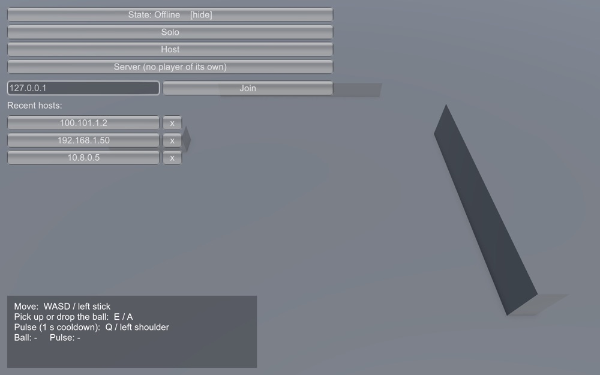
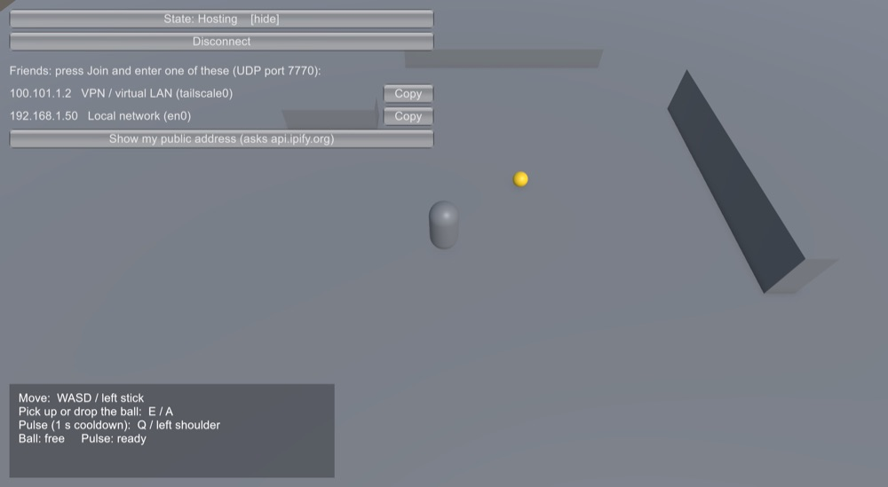

Pick your device above
The steps differ for Mac, Steam Deck / Linux, and Windows.
Everyone playing together must be on exactly the same version. If the versions differ, the host refuses the connection and tells you which versions don't match.
Mac (Apple Silicon)
M1 or newer. Intel Macs are not supported.
1 · First install
- Open Terminal: press ⌘ Space, type Terminal, press Enter.
- Paste this line and press Enter:
curl -fsSL https://github.com/espac1o/unknown-adventure-builds/releases/latest/download/install.sh | bash
- A small menu appears. Press Enter. The game installs and starts.
=== Unknown Adventure === Installed: nothing yet Latest: 0.1.0 [Enter] Install 0.1.0 and play o Install another version s Show install folder q Quit > (press Enter) Installing 0.1.0 (was: nothing) Now on version 0.1.0. Launcher: ~/Applications/Unknown Adventure.app Launching Unknown Adventure 0.1.0
Меню установщика выводится на английском — так оно выглядит и у вас на экране.
Prefer double-clicking instead of Terminal?
Download UnknownAdventure-installer-macos.zip from the latest release, unzip it, and open UnknownAdventure.command. The first time, macOS asks for confirmation because the file came from a browser: right-click it, choose Open, then Open again.
2 · Start it later
The installer created a launcher called Unknown Adventure in your Applications folder. Press ⌘ Space, type its name, press Enter. A Terminal window opens with the menu; press Enter again. This checks for a new version, installs it if there is one, and starts the game.
Illustration
3 · Update or change the version
Open the launcher and use the menu:
Enter | update to the newest version and play |
p | play the installed version without checking for updates |
o | install a different version: it lists the available ones, then type one, for example 0.1.0 |
r | go back to the previous version |
s / q | show where the game is installed / quit |
Or straight from Terminal, without the menu:
"$HOME/Library/Application Support/UnknownAdventure/UnknownAdventure.command" --version 0.1.0 "$HOME/Library/Application Support/UnknownAdventure/UnknownAdventure.command" rollback
The two newest versions stay on disk, so going back is instant.
Steam Deck and Linux PCs
64-bit Intel/AMD. On the Deck, do the install in Desktop Mode; after that you can launch from Gaming Mode.
1 · First install (Desktop Mode)
- Press the Steam button, choose Power, then Switch to Desktop.
- Open Konsole (the terminal) from the application menu.
- Paste this line and press Enter:
curl -fsSL https://github.com/espac1o/unknown-adventure-builds/releases/latest/download/install.sh | bash
- Press Enter at the menu. The game installs and starts.
=== Unknown Adventure === Installed: nothing yet Latest: 0.1.0 [Enter] Install 0.1.0 and play o Install another version q Quit > (press Enter) Now on version 0.1.0. Launcher: "Unknown Adventure" in your applications menu Launching Unknown Adventure 0.1.0
The installer adds an Unknown Adventure entry to the application menu (under Games).
2 · Start it from Gaming Mode
Add the launcher to Steam once, in Desktop Mode. Afterwards, choosing it in Gaming Mode updates the game when there is a newer version and then starts it. If the Deck is offline or an update fails, it simply starts the version you already have.
Option A — the easy way
In Steam: Games → Add a Non-Steam Game to My Library, tick Unknown Adventure, press Add Selected Programs.
Illustration
Option B — if it isn't in the list
- In Steam choose Games → Add a Non-Steam Game to My Library → Browse.
- Set the file type to All Files, press Ctrl+H to show hidden folders, open
.local/share/UnknownAdventureand pickUnknownAdventure.command. Press Add Selected Programs. - In your library right-click the new entry, choose Properties, and set Launch Options to
play.
Illustration
Then use Return to Gaming Mode on the desktop. The game is in your library under Non-Steam.
Don't enable a Steam Play / Proton compatibility tool for it: the Linux build runs natively.
The current test menu is clicked with a mouse. If the sticks don't move the pointer, use the touchscreen or trackpads, or pick the Keyboard (WASD) and Mouse controller layout for the game.
3 · Update or change the version
In Desktop Mode open Konsole and run the launcher; you get the same menu as on the Mac (o install a specific version, r go back one version, p play without updating):
~/.local/share/UnknownAdventure/UnknownAdventure.command
Or directly:
~/.local/share/UnknownAdventure/UnknownAdventure.command --version 0.1.0 ~/.local/share/UnknownAdventure/UnknownAdventure.command rollback
The Gaming Mode shortcut always moves to the newest version. After choosing an older version for a test, start the game from Desktop Mode (the application-menu entry, or the menu above with p).
Windows
64-bit. There is no installer for Windows yet; you download and unzip a build.
Install
- Open the latest release page.
- Under Assets, download
UnknownAdventure-<version>-windows.zip. - Unzip it into a folder of your choice and run
UnknownAdventure.exe.
Windows may show “Windows protected your PC” because the game isn't signed yet. This is a test build: if you trust the source, choose More info, then Run anyway.
Update or change the version
Download the zip for the version you want from the Releases page (pick a version, use its Assets list), unzip it into a new folder, and run it from there. You can keep several versions side by side and delete old folders yourself.
Playing together
The start screen has three buttons: Solo, Host and Join.


- Host: the game lists your addresses under the buttons, each with a Copy button: a VPN / virtual LAN address (best for friends in different places), your local network address (for people on the same Wi-Fi or cable), and a button to look up your public address. Send one of them to your friends. Your computer must accept incoming UDP traffic on port 7770; allow it if the firewall asks. A public address only works if your router forwards that port to your computer.
- Join: type the host's IP address and press Join. The last three hosts you joined are listed under the field: click one to put it in the field, then press Join yourself; the x deletes an entry.
- Server: runs a session with no player of its own (for a spare computer). Everyone, including you, then uses Join.
In the arena: the box at the bottom left always shows the controls and the state of the ball and the pulse. Move with WASD or the left stick. E (gamepad A) picks up or drops the gold ball: you must be close, and only one player can hold it; a dropped ball lands on the ground in front of you. Q (left shoulder) fires a pulse, with a one-second cooldown. Try grabbing the ball at the same moment as a friend: exactly one of you gets it.
If joining fails you'll see why:
| Incompatible game version | you and the host are on different versions; one of you must change version |
| Could not reach the host | wrong address, host not started, or a firewall in the way |
| Could not start the server | the port is already in use (another copy of the game?) |
Where things are
| Installed game | ~/Library/Application Support/UnknownAdventure |
| Launcher | ~/Applications/Unknown Adventure.app |
| Installed game | ~/.local/share/UnknownAdventure |
| Launcher | ~/.local/share/applications/unknown-adventure.desktop |
| Installed game | the folder you unzipped it into |
Your saves and settings are stored separately by the game, so updating or switching versions never touches them. To remove the game, delete the installed-game folder above and the launcher.
If something goes wrong
“needs an Apple Silicon Mac”
The Mac build doesn't run on Intel Macs.
“Could not reach the update server”
You are offline or GitHub is unreachable. The installer starts the version you already have.
A download fails or is rejected
Nothing is changed; your installed version still works. Try again.
The Mac asks about incoming network connections
That's the firewall asking about hosting a session. Allow it if you want others to join you.
Anything else: send the game's log
Send the log file with a short description of what you did:
~/Library/Logs/DefaultCompany/UnknownAdventure/Player.log~/.config/unity3d/DefaultCompany/UnknownAdventure/Player.log%USERPROFILE%\AppData\LocalLow\DefaultCompany\UnknownAdventure\Player.log